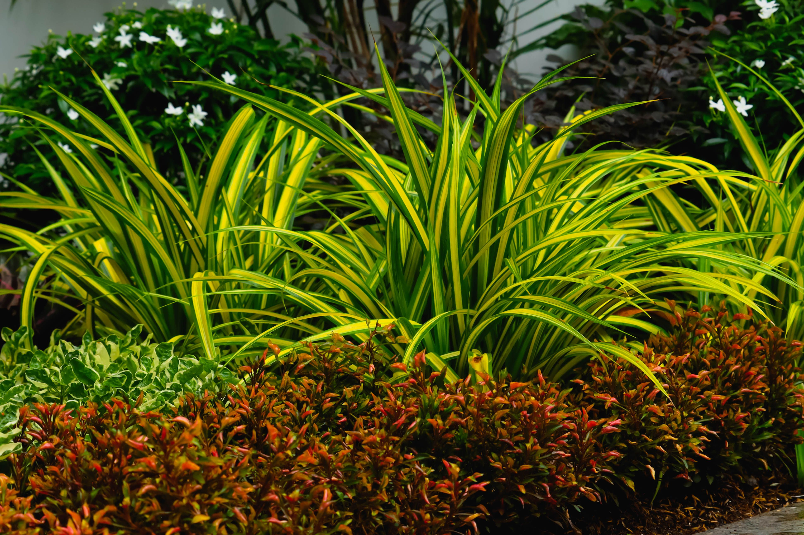

In This Article
- Introduction
- Start by Decluttering
- Create Clear Categories
- Use Vertical Storage
- Make Better Use of the Sink Area
- Organize the Shower and Bathtub
- Use Doors and Walls
- Choose Containers That Fit the Space
- Store Towels Efficiently
- Keep Cleaning Products Accessible but Safe
- Improve Visual Order
- Create a Simple Daily Reset
- Review the Bathroom Regularly
- Common Mistakes to Avoid
- Frequently Asked Questions
- Conclusion
Introduction
Organizing a small bathroom is mainly about using limited space intentionally. The goal is not to fill every wall and corner with storage, but to make everyday items easy to reach while keeping surfaces clear and the room comfortable to use.
Before buying organizers, review what is already in the bathroom. Removing expired products, duplicates, and items that belong elsewhere often creates more space than adding another cabinet or basket.
Start by Decluttering
Take products out of drawers, cabinets, shelves, and the shower area. Group them by type so you can see how much you actually own.
Discard empty containers, expired cosmetics, old samples, and products you no longer use. Check local guidance for medicines or hazardous products rather than throwing them away carelessly.
Move items that do not need to stay in the bathroom, such as large backups or rarely used appliances, to another suitable storage area when possible.
Create Clear Categories
Organize by routine rather than by package size. Categories can include dental care, skincare, hair products, shaving, first aid, cleaning, towels, and spare toiletries.
Avoid vague categories such as miscellaneous. They quickly become mixed containers where useful items disappear.
Keep each category together so you can see what you have before buying more.
Use Vertical Storage
In a small bathroom, wall space is often more available than floor space. Shelves, narrow cabinets, hooks, and over-toilet storage can increase capacity without narrowing circulation.
Measure carefully before installing anything. Make sure doors, drawers, mirrors, and ventilation grilles still open fully.
Keep heavier items on lower shelves and lighter items higher up for safety.
Make Better Use of the Sink Area
The sink area is usually one of the busiest zones. Keep only frequently used items visible and move backups into drawers or cabinets.

Drawer dividers and small trays can prevent toothbrushes, cosmetics, and grooming tools from becoming a mixed pile.
If the cabinet under the sink contains plumbing, choose organizers that fit around pipes and allow access for maintenance.
Organize the Shower and Bathtub
Keep only the products currently in use in the shower. Too many bottles make cleaning harder and create visual clutter.
Use rust-resistant caddies, corner shelves, or wall-mounted systems designed for wet environments. Make sure suction or adhesive systems are rated for the surface and weight.
Allow air to circulate around bottles so water does not remain trapped underneath.
Use Doors and Walls
The back of the bathroom door can hold lightweight towels, robes, or small organizers when the hardware is suitable.
Hooks are useful because they need little space and make it easy to return towels after use. Install them where fabrics can dry properly.
Wall-mounted magnetic or adhesive organizers can be useful for small tools, but they should not be placed where water or heat makes them unsafe.
Choose Containers That Fit the Space
Measure drawers and shelves before buying baskets or boxes. Attractive organizers that waste depth or height can reduce capacity instead of improving it.
Transparent containers make contents easy to see, while opaque baskets can create a calmer appearance if they are clearly labeled.
Choose materials that tolerate humidity and are easy to wipe clean.
Store Towels Efficiently
Keep only the number of towels that comfortably fits the available storage. Large backup quantities may be better stored elsewhere.
Fold or roll towels according to shelf dimensions rather than following one decorative method for every bathroom.
Make sure damp towels have enough space to dry before they are returned to storage.
Keep Cleaning Products Accessible but Safe
Storing a few bathroom-specific cleaning products nearby can make quick maintenance easier, but safety comes first.
Keep chemicals in their original labeled containers and away from children and pets. Do not mix products.
If secure bathroom storage is limited, keep cleaning products in another locked or safe location.
Improve Visual Order
Clear countertops make a small bathroom feel larger and simplify cleaning. Keep decorative objects limited so they do not compete with daily essentials.
Repeating a small number of container colors or materials can make open shelves look calmer without requiring every item to match.
A large mirror can also increase the sense of depth and reflect light, provided it is safely installed.
Create a Simple Daily Reset
Spend one or two minutes after the morning or evening routine returning products, hanging towels, and wiping obvious water from the sink area.
This small habit prevents clutter from building up and reduces the amount of work needed during weekly cleaning.
Make the system easy enough that every item can be returned without moving several other objects first.
Review the Bathroom Regularly
Every few months, check cosmetics, medications, backups, towels, and cleaning supplies. Remove expired or unused items and update categories if routines have changed.
Small bathrooms become crowded quickly when products accumulate, so regular review is more effective than waiting for a complete reorganization.
If one shelf or drawer constantly becomes messy, the storage system may be too complicated or the category may be too broad.
Common Mistakes to Avoid
Do not buy organizers before decluttering and measuring. Avoid filling every vertical surface with shelves because the room can begin to feel enclosed.
Do not store moisture-sensitive items directly beside the shower without protection. Keep access to plumbing, electrical outlets, and ventilation clear.
Finally, avoid using floor space for storage when wall or cabinet space can solve the same problem more safely.
Frequently Asked Questions
What should I organize first in a small bathroom?
Start with decluttering and then organize the categories you use every day around the sink and shower.
How can I create more storage without adding a cabinet?
Use hooks, narrow shelves, drawer dividers, and the back of the door when appropriate.
Should I store backups in the bathroom?
Only if space allows. Large backup quantities are often better stored elsewhere.
How can I make the bathroom look less cluttered?
Keep countertops clear, reduce the number of visible products, and use simple grouped storage.
Use Moisture-Resistant Storage
Bathrooms experience frequent humidity changes, so choose shelves, baskets, adhesives, and finishes that are intended for damp environments. Materials that swell, rust, or peel quickly create more maintenance.
Keep air moving around stored textiles and avoid packing cabinets so tightly that dampness is trapped.
Use Moisture-Resistant Storage
Bathrooms experience frequent humidity changes, so choose shelves, baskets, adhesives, and finishes that are intended for damp environments. Materials that swell, rust, or peel quickly create more maintenance.
Keep air moving around stored textiles and avoid packing cabinets so tightly that dampness is trapped.
Use Moisture-Resistant Storage
Bathrooms experience frequent humidity changes, so choose shelves, baskets, adhesives, and finishes that are intended for damp environments. Materials that swell, rust, or peel quickly create more maintenance.
Keep air moving around stored textiles and avoid packing cabinets so tightly that dampness is trapped.
Use Moisture-Resistant Storage
Bathrooms experience frequent humidity changes, so choose shelves, baskets, adhesives, and finishes that are intended for damp environments. Materials that swell, rust, or peel quickly create more maintenance.
Keep air moving around stored textiles and avoid packing cabinets so tightly that dampness is trapped.
Use Moisture-Resistant Storage
Bathrooms experience frequent humidity changes, so choose shelves, baskets, adhesives, and finishes that are intended for damp environments. Materials that swell, rust, or peel quickly create more maintenance.
Keep air moving around stored textiles and avoid packing cabinets so tightly that dampness is trapped.
Use Moisture-Resistant Storage
Bathrooms experience frequent humidity changes, so choose shelves, baskets, adhesives, and finishes that are intended for damp environments. Materials that swell, rust, or peel quickly create more maintenance.
Keep air moving around stored textiles and avoid packing cabinets so tightly that dampness is trapped.
Use Moisture-Resistant Storage
Bathrooms experience frequent humidity changes, so choose shelves, baskets, adhesives, and finishes that are intended for damp environments. Materials that swell, rust, or peel quickly create more maintenance.
Keep air moving around stored textiles and avoid packing cabinets so tightly that dampness is trapped.
Use Moisture-Resistant Storage
Bathrooms experience frequent humidity changes, so choose shelves, baskets, adhesives, and finishes that are intended for damp environments. Materials that swell, rust, or peel quickly create more maintenance.
Keep air moving around stored textiles and avoid packing cabinets so tightly that dampness is trapped.
Use Moisture-Resistant Storage
Bathrooms experience frequent humidity changes, so choose shelves, baskets, adhesives, and finishes that are intended for damp environments. Materials that swell, rust, or peel quickly create more maintenance.
Keep air moving around stored textiles and avoid packing cabinets so tightly that dampness is trapped.
Use Moisture-Resistant Storage
Bathrooms experience frequent humidity changes, so choose shelves, baskets, adhesives, and finishes that are intended for damp environments. Materials that swell, rust, or peel quickly create more maintenance.
Keep air moving around stored textiles and avoid packing cabinets so tightly that dampness is trapped.
Use Moisture-Resistant Storage
Bathrooms experience frequent humidity changes, so choose shelves, baskets, adhesives, and finishes that are intended for damp environments. Materials that swell, rust, or peel quickly create more maintenance.
Keep air moving around stored textiles and avoid packing cabinets so tightly that dampness is trapped.
Use Moisture-Resistant Storage
Bathrooms experience frequent humidity changes, so choose shelves, baskets, adhesives, and finishes that are intended for damp environments. Materials that swell, rust, or peel quickly create more maintenance.
Keep air moving around stored textiles and avoid packing cabinets so tightly that dampness is trapped.
Use Moisture-Resistant Storage
Bathrooms experience frequent humidity changes, so choose shelves, baskets, adhesives, and finishes that are intended for damp environments. Materials that swell, rust, or peel quickly create more maintenance.
Keep air moving around stored textiles and avoid packing cabinets so tightly that dampness is trapped.
Use Moisture-Resistant Storage
Bathrooms experience frequent humidity changes, so choose shelves, baskets, adhesives, and finishes that are intended for damp environments. Materials that swell, rust, or peel quickly create more maintenance.
Keep air moving around stored textiles and avoid packing cabinets so tightly that dampness is trapped.
Use Moisture-Resistant Storage
Bathrooms experience frequent humidity changes, so choose shelves, baskets, adhesives, and finishes that are intended for damp environments. Materials that swell, rust, or peel quickly create more maintenance.
Keep air moving around stored textiles and avoid packing cabinets so tightly that dampness is trapped.
Use Moisture-Resistant Storage
Bathrooms experience frequent humidity changes, so choose shelves, baskets, adhesives, and finishes that are intended for damp environments. Materials that swell, rust, or peel quickly create more maintenance.
Keep air moving around stored textiles and avoid packing cabinets so tightly that dampness is trapped.
Use Moisture-Resistant Storage
Bathrooms experience frequent humidity changes, so choose shelves, baskets, adhesives, and finishes that are intended for damp environments. Materials that swell, rust, or peel quickly create more maintenance.
Keep air moving around stored textiles and avoid packing cabinets so tightly that dampness is trapped.
Use Moisture-Resistant Storage
Bathrooms experience frequent humidity changes, so choose shelves, baskets, adhesives, and finishes that are intended for damp environments. Materials that swell, rust, or peel quickly create more maintenance.
Keep air moving around stored textiles and avoid packing cabinets so tightly that dampness is trapped.
Use Moisture-Resistant Storage
Bathrooms experience frequent humidity changes, so choose shelves, baskets, adhesives, and finishes that are intended for damp environments. Materials that swell, rust, or peel quickly create more maintenance.
Keep air moving around stored textiles and avoid packing cabinets so tightly that dampness is trapped.
Conclusion
Organizing a small bathroom works best when you remove unnecessary items, create clear categories, use vertical space carefully, and keep frequently used products easy to reach.
A simple system that can be reset in a minute or two each day is more useful than a complicated arrangement that looks perfect only after a deep clean.